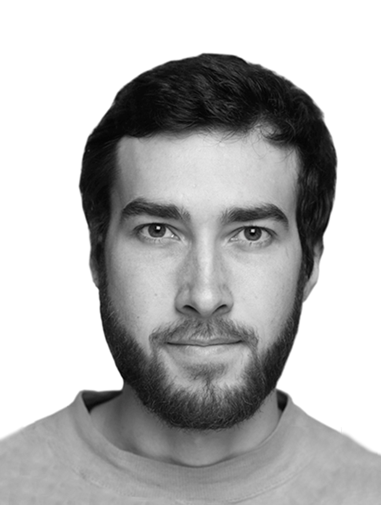

Mikhail Chepkin
 С/C++ Python backend-developerC/C++ developer, Ecole42 student, bachelor in radio engineering. Interested in cloud technologies, networking, and DevOps.
Personal Details
Phone: +7 (923) 662-07-67
E-mail: mihchepi@gmail.com
Telegram: @mihchepi
Github: github.com/MihChepi
Education
St. Petersburg Institute of Film and Television | Bachelor, Audiovisual technology
September 2016 - June 2020. St. Petersburg
Developed an online video editor based on Azure as a graduation work.
School 21 (Ecole 42) | Student
October 2020 - present. Kazan
C/C ++
Gained experience in docker, kubernetes, sql. Wrote my own version of the UNIX command shell in C.
Professional Experience
June 2019 - August 2019: OngNet. Fiber Optic Lines Installer, Gorno-Altaysk.
Completed a university internship. Was engaged in the repair and installation of fiber-optic lines, including welding and laying new communication ones.October 2020 - July 2021: Technical manager of an online store based on bitrix, remotely.
Highly improved my skills in mysql, php, JavaScript. Worked with a remote server (ssh, linux).
Major tasks:
- Configured a virtual PBX
- Fixed the script for exporting goods to Yandex.Market (worked a lot with php code)
Tech stack
C/C++;
Python;
Docker;
Kubernetes.
Languages
English pre-intermediate
Soft skills
Used to be a chairman of the Student Scientific Society of SPBGIKIT. Good team player.